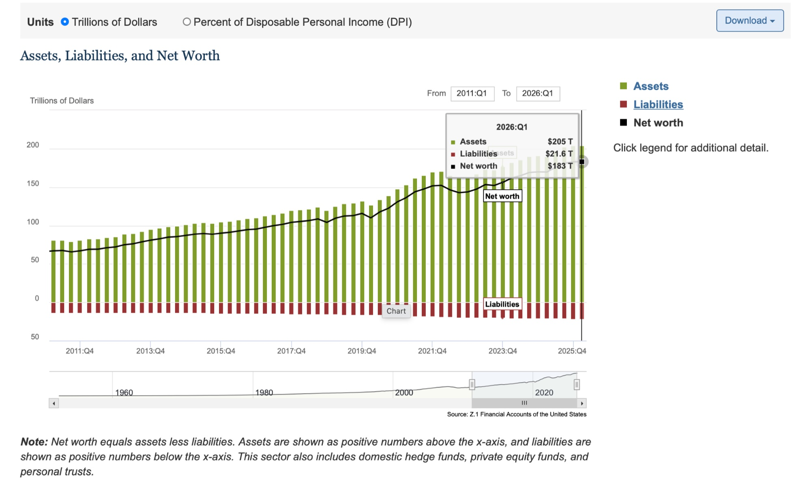
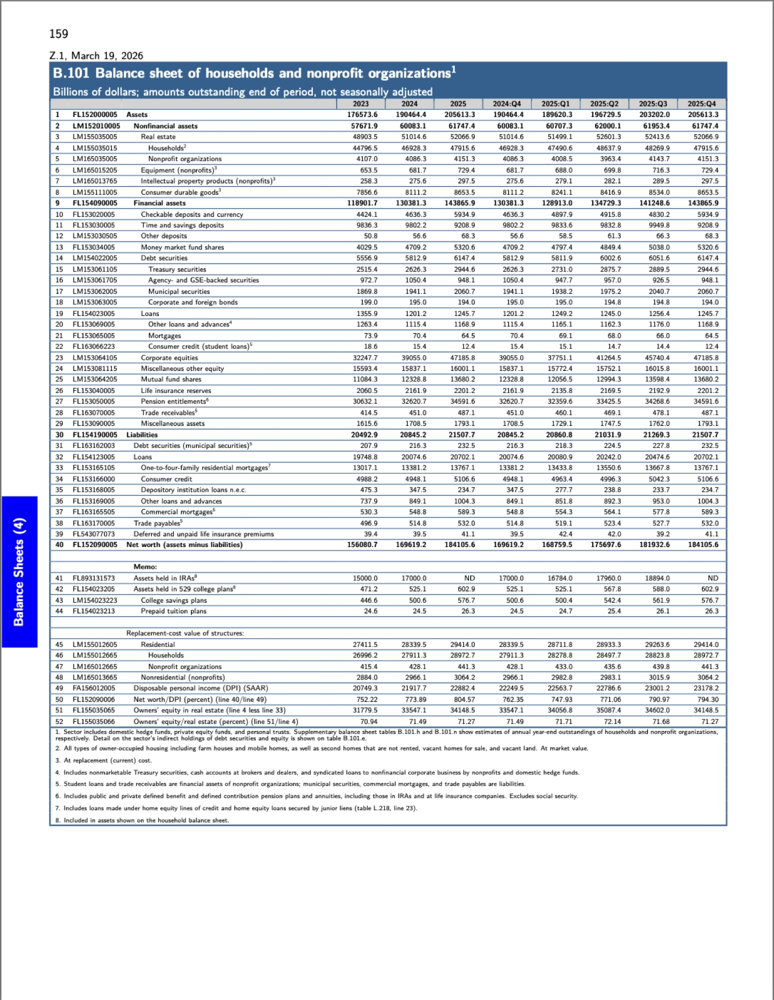

Margin Notes · Note 3
Financial Markets, Module 6
Investment and Commercial Banks
Although investment banks are by nature more risk-taking and active, they have regulation (in the US) that makes them more manageable in dangerous situations.
Investment banks, for example, do not accept deposits, and have not been regulated as banks. They will not hold money for clients and instead, you must purchase investment products — including ETFs, Funds, Wealth Management Services and Bank shares.
From a government standpoint, these banks are not members of the Federal Reserve System, and do not normally access discount windows. A bank with access to the Federal Reserve System can take a role in electing regional directors and also using central bank services. It must, however, report to the federal oversight regarding its safety and soundness.
Investment banks underwrite securities instead of making loans.
For example, as of December 31st 2025, the CIB (Commercial & Investment Banking) Division of JPM has:
- Issued $125bn in loans
- Underwritten ≈$800bn in securities, mostly in the Debt and Equity Markets.
The failure and collapse of many Investment Banks have made these firms vulnerable to acquisition from larger banks or mergers.
Underwriting Securities
Clearly, from the report given by JPM, we can tell that “underwriting securities” takes an important role in the economy. Behind the showcase of one single bank (although the largest one out there), the entire market is in itself worth more than $30.8 trillion (if you include short term corporate commercial paper & instruments, which adds $0.4bn to the total) in newly underwritten capital annually.
The overall market capitalization has accumulated $318.5 trillion dollars in total outstanding securities.
But what is the underwriting of securities?
The underwriting of securities is the issuance of shares and corporate debt.
The underwriter provides advice for the issuer, distribution of securities, sharing of risks of issue and stabilization of the aftermarket.
The underwriter also “certifies” the issue by putting its reputation behind the underwriting.
Securities in the end, are broad… They include:
- Ownership in a company
- Debt owed by governments or corporations
- Derivatives
There is a moral hazard problem mitigated by Investment Banks. Firms have the incentive to issue shares when they know their earnings are only temporarily high. That problem can be “solved” by resorting to bank loans instead of new equity. But this is an information asymmetry problem — Insiders know more about the firm’s true value than outsiders.
As insiders deal with this entirely in mind, they have the incentive to issue new shares only when the stock is “artificially inflated”.
And just by doing this, investors tend to panic, and they sell the stock as an attempt to avoid the trap.
Issuing new shares means:
- Dilution of current stake in a company
- Discounting (priced below market value to entice new investors)
- Signaling, which companies do to imply that they are in need of cash
To avoid this kind of scrutiny, they get loans. And usually, banks employ credit analysts that watch the entire lifespan of a company, and only then do they decide either to issue loans or to refuse it.
Oftentimes, a bank’s willingness to loan money is a good sign. To many, it’s a sign of credibility.
The problem can also be solved by issuing security with an investment bank that has a reputation to protect.
The “reputation to protect”
An Investment bank builds credibility by avoiding systematic and internal errors, as well as issuing good condition securities.
Studies show that investment banks that repeatedly underprice or overprice issues suffer a market share loss afterwards.
Most investment banks have two basic kinds of offerings
- Bought deal (or a Firm commitment offering), where the underwriter agrees to buy all shares that are not sold
- Best efforts: the underwriter says that if the issue is not sold then the deal collapses.
The Underwriting Process
This usually consists of:
- A prefiling period (timeframe before files are submitted)
- Advise issuers about their choices
- Agreement among underwriters, designates manager and fees
- Registration statement with SEC, begins cooling-off period
- Cooling off period – distribute preliminary prospectus (red herring).
Usually, a prefiling period is the period where you discuss with an investment bank before filing
The process continues as:
- The investment bank calls prospective clients for an indication of interest
- Due diligence meetings emerge between the underwriter and the corporation
- Decisions on an offering price
- They begin an underwriting agreement, which will decide what underwriter sells what
- Dealer agreements where they purchase from underwriters at a discount from the price offered to the public
- There is an effective date, and sometimes they gain support throughout their IPO’s release, because it can sometimes (literally always) be very volatile in the following weeks.
That kind of support given to the IPO is called Stabilization. It's in some way, market manipulation, but the SEC allows it. You might ask why the SEC would even allow something considered market manipulation, and that is because they want to prevent panic selling and foster a steady market.
The underwriting syndicate (the banks temporarily grouping to sell an issue of stock or bonds) is legally allowed to conspire to fix prices in the market until the entire issue is sold.
IPOs usually see their price jump in the first one or two days, it happens immediately prior to their release, but right after, it tends to fall.
Brokers sometimes refuse to sell IPOs because they would rather preserve it to less attentive clients that are less attentive to intra-day price fluctuations and more to longer time periods. These are called anti-flipping policies.
The average IPO jumps 16% on the first day, according to Jay Ritter, in his Journal of Finance (1991).
Although the average IPO earns a +16% return on the first day, this return tends to be offset in the following three years.
Goldman Sachs embedded the “Making money — always and no exceptions” principle in their policies. Regardless of prestige, their goal was to accumulate the most amount of money possible. In some cases, they would charge their wealthiest clients the most.
“Absolute loyalty to the firm and to the partnership was expected” according to Charles Ellis
This investment consultant also stated that “personal anonymity is almost a core value of the firm”
Rating Agencies
The first rating agency was founded by John L. Moody in 1909, they were giving letter grades where AAA was the best rating.
Rating Agencies functioned as barriers to Adverse Selection.
Poor’s (1916), another rating agency that came later, merged with Standard Statistics in 1941 to become…
Agencies would not accept money from the people they rated because they believed it would destroy their credibility. But, that all changed in the 1970s, where they began to allow it. This was a significant change that led to the 2008 Financial Crisis, if you have some prior knowledge on how it started, you would know that many debt problems emerged from risky subprime mortgage bonds. The role that these rating agencies played was giving them triple A grades, when in fact, they were terrible.
As a result, the Dodd Frank act gave way to double checking of ratings. From that point, they couldn’t just accept AAA ratings, they now have to check for themselves.
Very famous scene about this in the movie: The Big Short
Glass-Steagall Act of 1933
This Act built the modern concept of an investment bank, because it separated the different kinds of banks as well as insurance companies. The Senator of Virginia at that time (Carter Glass, democrat) as well as a representative from Alabama (Henry B. Steagall) believed that commercial banks' securities operations had contributed to the crash of 1929, that banks failed because of these operations and used their knowledge as lenders to do insider trading of securities.
This act also created the FDIC (Federal Deposit Insurance Company, which supplies deposit insurance)
In the 1990s, regulators were decomposing the 1933 Act by allowing commercial banks to engage in certain securities operations.
US President Clinton signed the Gramm-Leach Bill in November 1999, which rescinded the Glass-Steagall Act.
Examples of M&A between different kinds of banks:
- Travelers Group (insurance) and Citicorp (commercial bank) to produce Citigroup
- Chase Manhattan Bank (commercial bank) acquisition of JPM (investment bank)
Volcker Rule of 2011: Commercial banks cannot directly own hedge funds or other risky investments.
Paul Volcker was a Fed chairman who wanted to bring back the Glass-Steagall Act.


Balance Sheet of Households and Nonprofit Organizations, 1952 - 2026
Published every quarter by the FED


Legal definition of a Financial Advisor:
- Which excludes bankers, lawyers, reporters, professors and even Broker Dealers, whose advice is only incidental to their business.
- We attribute this name to anyone who advises others on the value of securities or advisability of investing or who publishes analysis.
National Securities Markets Improvement Act of 1996 (NSMIA)
- This act states that all advisors managing more than $30 million must register with the SEC
- Those managing less than $25m must register with state securities regulators.
Financial planners are not regulated, but they must register themselves as financial advisors first.
The Dodd-Frank Act only requires a study of financial planners
Mutual Funds
These funds pull money from investors and pool it together. According to William N. Goetzmann (Yale professor), the first mutual funds appeared in Holland during the 1770s.
In the 1920s, investment companies bilked (defrauded) small investors.
The most popular mutual fund at that time was MIT (not the university, absolutely no link to it), the Massachusetts Investment Trust. They were popular because they would publish their portfolios, and allow their clients to withdraw their money at any requested time. People went there because they believed that it was more honest. They were the first open Mutual Fund in the US, they currently have 7bn in assets, not much because of high fees.
Exchange Traded Funds
ETFs (Exchange Traded Funds) are investment funds that hold a basket of assets (stocks, bonds, commodities, etc) that are designed to track a market. They are efficient because they usually have low management fees and tend to be flexible to regular market hours. They are used to replace the need to buy a dozen assets individually and pay the fee for each asset.
The first ETF was the Standard & Poor's Depositary Receipts (SPDRs). SPDRs are often called “Spiders”, and are managed by State Street Global Advisors.
Usually, it is very good for a firm to be added to an ETF, because they now have access to wider funding from investors.
Closed and Open End Funds
Open-end funds continuously create and redeem shares to meet investor demand, trading at Net Asset Value (total value of an investment fund’s assets minus its liabilities), which means that you buy and sell shares directly from the fund company itself and not other investors. They calculate the NAV at the end of the day.
Closed-end funds issue a fixed number of shares through an IPO and trade on secondary exchanges (buy and sell stocks, funds, etc directly from other investors). The prices of closed-end funds are deviated from market-driven prices that can deviate from their NAV.
What kind of liabilities?
Either fund management fees, financing and leveraging fees (because they do buy stock shares and then allow the quantity of that stock to fluctuate), unsettled transactions (obligations, funds given to investors asking for their money back) and tax liabilities.
What specifications?
Closed-end funds must publish their NAV daily, this is the visible information required for investors to know how the fund is intrinsically doing.
The value of the fund is not necessarily the value of the investments.
- In Financial Markets, Brokers act on behalf of others as their agents for which they earn a commission. (agents)
- Dealers act for themselves, in other words as a principal in the transaction for which they get a markup.
Dealers
- They stand ready to buy and sell at posted prices, bid and ask, profit from the bid-ask spread rather than commission
- A very large dealer, for example, is Jane Street. This firm operates as a quantitative trading firm as well as a liquidity provider. Although they do not provide aggregate metrics to their provided liquidity in the market, we can estimate that they averaged $2 trillion/month in equity volume.
- There are inter-dealer brokers, which facilitate wholesale trade among large institutions, usually in OTC markets. They are used for anonymity, because they will never provide client names.
- There are no real estate dealers because in the US, dealers pay ordinary income on capital gains. Real estate has to be held for a substantial period of time between sales. But there are real estate brokers…
- There are real estate dealers in Germany
Churning is when brokers (who either manage your account or contact you) make you do excessive trades to get commissions for themselves.
Exchanges provide standards and codes of ethics for broker members, standards for stocks. The first exchange was the NYSE, established in 1792 by the Buttonwood Agreement. (I said this already)
A paper from Ning Zhu and two coauthors at Tsinghua University (large university in Beijing, probably one of the best) found that Chinese investors tend to trade stocks that are locally listed. They also discovered that stocks co-move with co-listed stocks. But, there is no information advantage. It’s more of a “non-informational familiarity bias”, most European Investors would rather trade in domestic (or of course, American) markets than Asian/African markets.
In the 1990s (1996, to be precise), a company called Island ECN was founded under another company Datek Securities. The name ECN came from “electronic communication network”, all built for US Equities. This was important because it introduced fully automated order matching (automated process that pairs buy orders (bids) and sell orders (asks)) and high speed execution.
High Frequency Trading
This kind of trading has become more and more influential as markets evolve. Trades nowadays can be flashed for a millisecond and HFT Programs can immediately respond to these. The speed of transmission matters because it can give an advantage over retail investors, etc.
Order flow is the real-time stream of all incoming buy and sell orders, which shows the exact volume traded at specific price levels. It reveals the balance of buyers and sellers to help traders spot market momentum.
Payment for Order Flow
Quite an interesting idea, brokers will drum up orders and deal with customers. They will take orders and give them to market makers, which get a spread on Bid/Ask levels (for example, a flow of buy orders being given to a dealer will likely have a lower bid than on a public exchange). These makers will then capitalize on these orders and pay brokers for their decision.
In November 2000, the SEC posted rules that brokers must post composite statistics on the fraction of order flow going to various places.
Firms must also report statistics on their order-execution quality.
The different kind of orders:
- Market Order (direct execution)
- Limit Order (instruction to buy or sell at a specific price)
- Stop Loss Order (instruction to sell as you approach a loss)
Limit orders designate a price at or higher than what it is currently at whenever you would like to buy. When you would like to sell, it’s the opposite.
Public Finance
Governments are not necessarily set aside from markets and the financial world. In most cases, they are very present, and I don’t mean just regulation. Public Finance is the finance of the Government. A Government can default on its debt, meaning it cannot pay.
But it does not mean you lost all your money investing in it.
Repudiation however, is exactly that. If a Government declares Repudiation, it refuses to pay back its debt.
Oftentimes, Governments will inflate the currency to repay its debt, they do this by printing more to reimburse what they owe.
People who are aware of this still do it because Governments pay high interest rates on their debt.
Carmen Reinhart, an editorial, was convinced that there would be another debt crisis within some countries in the following years (2010s 2020s)
She believed that the following countries would be deeply affected:
During the 2010s
- Greece (correct, by defaulting on government debt)
- Ireland & Portugal (correct, from sovereign default)
- Spain & Italy (correct, due to a spike in bond yields)
What are bond yields?
Bond Yields are the returns investors expect from bonds, given as a percentage. Spain & Italy’s bond yields rose to ~7% (as peak)
But, Ireland once had a peak bond yield of ~14%
And Greece at 97.5% (completely astronomical, but a lot to do with Goldman Sachs, will explain later)
Reinhart-Rogoff Tally of Defaults (This Time is Different)
This was a paper that tracked hundreds of years of sovereign debt defaults (which occurs when a national government fails or refuses to pay its debt). It argued and showed that serial default (repeated default from a sovereign nation) was and is a normal pattern globally rather than an exception.
Bankruptcy in companies can lead to Governments becoming shareholders in that company, when they file for it.
When a company files for bankruptcy, they may do it by:
- Chapter 7: Liquidation (absolutely cooked)
- Chapter 11: Reorganization (still have enterprise value)
When facing personal bankruptcy, the US government outlines options like Chapter 7 (which would mean selling assets to reimburse debt), or Chapter 13, which restructures debt into a 3-5 year plan. When you still cannot reimburse your debt (Unsecured ones like credit card debt, medical bills and personal loans) with your assets then they are discharged, and when the court issues an automatic stay, these companies are legally restricted from going after you or demanding repayment.
On secured debt (Car and house loans), Chapter 7 Bankruptcy will eliminate personal liability for the cash balance but it will not erase the lender’s lien on the physical asset (the right to seize the property).
Running deficit: Spending more than you take.
Running deficit is allowed in US municipalities as long as it goes to capital expenditures (think of schools, hospitals, social services, etc)
Cities can issue debt (raise debt by borrowing from investors through bonds) and can also issue equity through revenue bonds.
Revenue Bonds are issued by municipalities as a form of debt to finance public infrastructure, and are repaid exclusively using the revenue accumulated from these projects.
Distressed debt investing
Investors can buy debt from a company by buying its bonds (or that of an investor who wants out) for pennies on the dollar. Holding onto this bond, it waits for all the company’s assets to be sold and transferred to a bankruptcy cash account. Once it does, it sells what it can to reimburse unsecured creditors (people to whom money is owed). This is usually exercised in OTC markets.
Origins of Social Insurance (began in Germany)
German social thinkers in the 1870s (such as Adolph Wagner) stressed insurance principles. Otto von Bismarck’s government instituted sickness insurance in 1883, accident insurance in 1884 and old age insurance in 1889.
Unemployment insurance emerged in 1911, United Kingdom
Sources
- Household balance sheet chart and table B.101: Federal Reserve, Financial Accounts of the United States (Z.1).